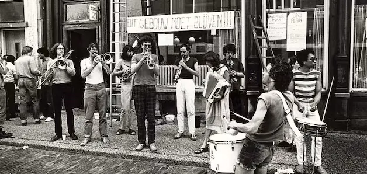

Evenement
Krachtige collectieven
- Wanneerdinsdag 3 november 2026, 19.30 tot 21.30 uur
- WaarThiemeloods
Leemptstraat 34 Nijmegen Route

Van gemeenschapstuin tot eigen warmtenet: Nijmegen barst van mooie voorbeelden van mensen die samen het initiatief nemen. Steeds meer Nijmegenaren ontdekken wat er mogelijk is wanneer je de krachten bundelt en verantwoordelijkheid met elkaar deelt. Maar wat maakt een collectief tot een echte gemeenschap? En hoe zorgen we dat we het echt samen doen – zonder meegezogen te worden in marktlogica of regelgeving?
Tijdens de feestelijke opening van de Energie-4Daagse onderzoeken we het samen. Het thema van de Energie 4-Daagse is dit jaar Wij(k)kracht. Tijdens een Duurzaamheidscafé met inspirerende sprekers, mooie voorbeelden uit de regio, gesprek en muziek ontdekken we wat gemeenschapsdenken kan betekenen voor onze stad en onze buurten. En wat we als collectieven en als gemeente kunnen doen om de gemeenschap echt voorop te zetten.
Damaris Matthijsen ziet gemeenschapsdenken als een weg naar een ander economisch systeem. Zij zegt: economie zou ervoor moeten zorgen dat ieders basisbehoefte wordt vervuld. In de praktijk staan eigenbelang en winst echter vaak centraal. Met de Economy Transformers pleit zij voor een economie waarin grond, kapitaal en arbeid meer in handen komen van gemeenschappen, in plaats van bij de markt of de staat. Deze avond vertelt ze hoe we zo’n gemeenschap vorm kunnen geven – en hoe we garanderen dat we vasthouden aan de oorspronkelijke belangen en idealen.
We zetten ook drie mooie voorbeelden uit de regio in het zonnetje. De Kleverbergh is een regeneratief landgoed in de Ooijpolder, waar mensen samenleven met dieren, planten en andere organismen en samen voedsel verbouwen. Energiegemeenschap Duurzaam Hazenkamp sloeg al succesvol de handen ineen om glasvezel aan te leggen in de Hazenkamp en verkent nu de mogelijkheden voor een energiegemeenschap in de wijk. Wijkmakerij Dukenburg is een groep inwoners die zich al drie jaar samen inzet voor een socialere, ondernemende, schonere, groenere en duurzamere wijk.
Tenslotte gaan we in gesprek met wethouder Tobias van Elferen, verantwoordelijk voor Duurzaamheid en Economie. De gemeente ondersteunt groepen Nijmegenaren die energiecollectieven willen starten. Wat is volgens hem de meerwaarde van deze initiatieven? Welke rol kan de gemeente spelen en hoe zorgen we ervoor dat zoveel mogelijk Nijmegenaren kunnen meedoen en meepraten?
Deze avond is de feestelijke opening van de Energie-4Daagse. We vieren het gemeenschapsdenken en vooral ook wat er kan ontstaan wanneer mensen hun ideeën, energie en talenten samenbrengen. En dat doen we natuurlijk niet zonder muziek. Om 21.15 uur neemt straatorkest Kladderadatsch het stokje over om de avond dansend en zingend af te sluiten.
Deze avond is een samenwerking tussen het Duurzaamheidscafé en de Energie-4Daagse.
Meer evenementen bij Thiemeloods
Er staan nu geen andere evenementen van Thiemeloods in de agenda.
Binnenkort in Nijmegen
 UitgelichtSean Taylor24 okt, 20.00 uurDe Brauerij
25okt
UitgelichtSean Taylor24 okt, 20.00 uurDe Brauerij
25okt UitgelichtHighlight Tours in het Vrijheidsmuseum25 okt, 14.00 uurVrijheidsmuseum
25okt
UitgelichtHighlight Tours in het Vrijheidsmuseum25 okt, 14.00 uurVrijheidsmuseum
25okt Uitwisselingsconcert Harmonie Hatert met DOV Wijchen25 okt, 13.00 uur
27okt
Uitwisselingsconcert Harmonie Hatert met DOV Wijchen25 okt, 13.00 uur
27okt Filmvertoning: Het land van mijn ouders27 okt, 19.00 uurHuis van de Nijmeegse Geschiedenis
Filmvertoning: Het land van mijn ouders27 okt, 19.00 uurHuis van de Nijmeegse Geschiedenis